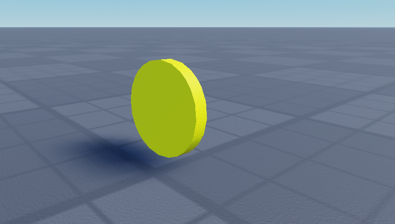

Luau is a fork of Lua created by the Roblox Corporation for use in Roblox Studio development. In 2021 Luau was made open source under the MIT liscense.
The primary focuses of Luau are performance and sandboxing, which is a security technique that keeps a program in a restricted environment with controlled access to resources, similar to virtualization, to prevent harm to the machine and its operating system. It's also designed to be embeddable like Lua, which means that it can be integrated into software to extend its functionality without having to write lower level code.
It is based on Lua 5.1, but it borrows some features introduced in Lua 5.2+ that don’t break compatibility and are deemed as a useful and logical addition to the language. It also adds functionality not seen in base Lua such as compound assignments, continue statements, and type annotations.
As a scripting language, Luau is simple to learn. Since Luau is open source and embeddable, it’s not beyond the realm of possibility to use for a project outside of Roblox. However, Luau is at its strongest when paired with Roblox Studio, the development client used for creating Roblox games.
Roblox is a good platform for learning video game development and smaller scale projects. It is not viable for a professional team wanting to create a quality game with a wide array of ideas for a type of game they want to create. Brands that are not built on the platform are investing into the platform in the form of purchasing existing small-scale games that fit a trend that is high-earning on the platform. These games are lower effort and easy to produce in high numbers. They are consumed primarily by children on the platform and Roblox influencers. Both of which have a lower inhibition for spending their Robux on in-game products. These games are not the kind of high quality, high-standard games that a video game development company would expect to produce. While it’s possible to use the engine for those projects with the aforementioned hurdles and limitations, it is not going to be something that's profits compared to other games being released on the platform.
As for Luau as a scripting language, it’s easy to learn and great to use on Roblox, but you might be using a more complex programming language for projects on other engines. Note: Lua/Luau can be embedded into some of these engines using third-party plugins, but as a higher-level scripting layer that interacts with deeper code i.e for simple modding support. Technically, this is how Luau works with Roblox as well as the engine is programmed using C++ but that API is not exposed for developers.
If you use Luau for video game development outside of Roblox, you may be embedding it yourself into another engine or using a non-Roblox engine that primarily uses Luau for development.
This demo contains a basic system where the Player can collect physical coin objects from the game world, which will then be added to the Player's coin balance. This coin balance is shown on the game's leaderboard system as well as a UI element that displays how many coins the Player has.
Firstly, I've added a new Part into the Workspace, and changed its shape property to Cylinder and resized into a flat coin object.

With the Part for the coin created, I've inserted a Script into the Part as its child, and wrote the code that allows the Coin to be collected by a Player
--Define the "Coin Part" (parent of the script) as a variable in the scriptlocal Coin = script.Parent
--Define the Coin Event as a variable, a RemoteEvent (think of it as a trigger between Server and Client) stored in "ReplicatedStorage"CoinEvent = game:GetService("ReplicatedStorage").CoinEvent
--Detect the Coin being touched, and check that the part touching it belongs to a Player. --InstanceName:IsA("ClassName")--Fire the Coin Event at the Player's Client. Send "1" as the amount of Coins to add. --RemoteEvent:FireClient(Target, Any)--Destroy the Coin object itself so that it can't be collected multiple times --InstanceName:Destroy()
Coin.Touched:Connect(function(hit) local Player = game.Players:GetPlayerFromCharacter(hit.Parent) if Player then CoinEvent:FireClient(Player, 1) Coin:Destroy() endend)
With the Coin object itself coded, I inserted a LocalScript, which is a client only Script, into the StarterPlayerScripts Folder, which are Scripts that get inserted into the Player when they join the game. In this LocalScript, I wrote the code for the main part of the Coin system that allows the Player to actually receive and store the coins they collect.
--Declare Coin Event once again on the Client scriptCoinEvent = game:GetService("ReplicatedStorage").CoinEvent
--This would usually be handled in a server script that deals with saved data, but that is beyond the scope of this demo --Create a folder named leaderstats and define the Local Player as its parent --Any value container instance in this folder will be displayed on the built-in leaderboard UI
leaderstats = Instance.new("Folder")leaderstats.Name = "leaderstats"leaderstats.Parent = game.Players.LocalPlayer
--Create the Coin IntValue Instance
Coins = Instance.new("IntValue")Coins.Name = "Coins"Coins.Parent = game.Players.LocalPlayer.leaderstatsCoins.Value = 0
--Let's add a sound that plays whenever a coin is receivedlocal collectSound = script.collect
--Listen for the CoinEvent being fired from server, and adjust the value of the Coin IntValue by the amount received.CoinEvent.OnClientEvent:Connect(function(amount) Coins.Value += amount collectSound:Play()end)For the final part of this Demo, I've created a UI element that displays the current amount of coins that a Player has. It has a LocalScript that detects when the Coin IntValue changes, and it will change a TextLabel to reflect the correct new amount of coins. Roblox Studio has a built-in UI system, though professional developers may want to create the graphics for the UI in an external program.

--This script handles the UI element of the Coint Counter itself. It detects any changes to the IntValue and adjusts the TextLabel of the Counter
local CoinAmount = script.Parent.CoinsAmount
--Use :WaitForChild() here, because it will throw an error if this script loads before these Instances existlocal Coins = game.Players.LocalPlayer:WaitForChild("leaderstats"):WaitForChild("Coins")
Coins.Changed:Connect(function() CoinAmount.Text = Coins.Valueend)
With every part of the Coin Collection system complete, below is a video showcasing how it actually works in-game:
While this Demo doesn't include code, it does show off a couple features built into Roblox Studio itself. The first feature we'll look at is the Toolbox

The Toolbox can be a useful feature. It allows you to browse the Developer marketplace within Roblox Studio, where other developers have published assets for other developers to use. The downside to allowing anyone to publish assets is that there will be many models and such that are not very high quality, and it's not recommended to use any Scripts people have uploaded for the sake of security, as well as Scripts being broken or poorly written. The exception to this is an actual trusted Studio Plugin or Module Script.
For our purposes in this Demo, I've searched for "Sword" in the Models category, and imported the Classic Sword Tool provided by the official Roblox account into the "StarterPack" Folder, which inserts Tools inside of the Folder into the Player's inventory when joining the game.

The next feature is the Generate Rig or Character Importer tool. It allows you to import a Humanoid object into the Workspace based on the option you select in the importer.


These Rigs have a couple purposes. You can use them as a template to create an NPC for your game, or you can use them as a Dummy to create animations using the animation editor. Since the Rigs contain a Humanoid object, they can have similar properties to Players themselves, including Health, which allows them to take damage from sources like the Sword Tool I imported into the game earlier.
This Demo is the most technically complex of the three Demos, though it includes less code than the first Demo. It introduces a few more services that you can utilize.
For this Demo, I've coded a sprinting system that allows the Player to run faster than the base Walk Speed while holding down the respective Input Hotkey. The first service it utilizes is the Input Action Service, which allows you to create an Input Action Instance that groups all associated Input Binding Instances to a single Action, which is used within code. I've inserted a LocalScript into "StarterPlayerScripts" just like the Coin system, and inserted an Input Action as a child of that Script. Finally, I inserted an InputBinding as a child of that InputAction that is mapped to "Left Shift". The main purpose of the InputAction is process if one of its child InputBindings has been Pressed, Released, or Changed in general.
--Declare the InputAction as a variable (Instance used to handle Actions with Input Keybinds as defined by InputBinding Instances)sprintInput = script.SprintAction
--Setup Player/Humanoid variables and desired walkspeed/runspeedlocal Player = game.Players.LocalPlayerlocal Character = Player.Character or Player.CharacterAdded:Wait()local Humanoid = Character.Humanoidlocal WalkSpeed = 16local RunSpeed = 24local isInput = falselocal isRun = false
Humanoid.WalkSpeed = WalkSpeed
--Let's make it a little fancy and add a fun camera effect to really sell the Player that their character is running faster --workspace.CurrentCamera is the Player's camera. We can change the FieldOfView property to add some visual flair to go with the running animationlocal PlayerCamera = workspace.CurrentCamera
--Listen for the InputAction being Pressed and Released, set isInput variable to true/falsesprintInput.Pressed:Connect(function() isInput = trueend)
sprintInput.Released:Connect(function() isInput = falseend)The next service we'll look at is RunService. RunService is used when you need to check or update something every frame. In this case, we need to actively check for whether the "isInput" and "isRun" variables are true or false. The "isRun" variable exists so that the WalkSpeed and Camera effects within the function are not constantly set if the Player is already running or has stopped running as of a previous frame.
--This function will fire every Frame. RunService has several events depending on the order it fires in relation to each frame --It is up to your discretion and research on which event should be used for a given case. PostSimulation happens to be last in the order.--Check if the Input is true or false and set walkspeed acoordinglygame:GetService("RunService").PostSimulation:Connect(function() if isInput and not isRun then Humanoid.WalkSpeed = RunSpeed PlayerCamera.FieldOfView = 80 isRun = true elseif not isInput and isRun then Humanoid.WalkSpeed = WalkSpeed PlayerCamera.FieldOfView = 70 isRun = false endend)Changing the FieldOfView statically doesn't feel very natural. It hurts the effect more than it helps. Let's introduce TweenService. A Tween is an instance that lets you change a property of an object from its current value to the target value in smooth increments. The length of a Tween is dependent on the parameter you pass in a TweenInfo object, which dictates properties of the Tween
local TweenService = game:GetService("TweenService")--A TweenInfo with one parameter is durationlocal TweenInfo = TweenInfo.new(0.25)
--TweenService:Create(TargetInstance,TweenInfo,{Property = Value}) --TweenName:Play() to run the Tween. You can also use other methods like :Pause(), :Cancel() to control the Tween --You can use the event TweenName.Completed:Wait() to force the script to wait for the Tween's completion.
local RunFOV = TweenService:Create(PlayerCamera, TweenInfo, {FieldOfView = 80})local DefaultFOV = TweenService:Create(PlayerCamera, TweenInfo, {FieldOfView = 70})Now for the full Script with Tweening implemented:
--Sprinting system. Let's assume the Player has access to a keyboard (so the input for sprinting is Left Shift) --and they can sprint forever with no stamina drain
--Declare the InputAction as a variable (Instance used to handle Actions with Input Keybinds as defined by InputBinding Instances)sprintInput = script.SprintAction
--Setup Player/Humanoid variables and desired walkspeed/runspeedlocal Player = game.Players.LocalPlayerlocal Character = Player.Character or Player.CharacterAdded:Wait()local Humanoid = Character.Humanoidlocal WalkSpeed = 16local RunSpeed = 24local isInput = falselocal isRun = false
Humanoid.WalkSpeed = WalkSpeed
--Let's make it a little fancy and add a fun camera effect to really sell the Player that their character is running faster --workspace.CurrentCamera is the Player's camera. We can change the FieldOfView property to add some visual flair to go with the running animationlocal PlayerCamera = workspace.CurrentCamera
local TweenService = game:GetService("TweenService")--A TweenInfo with one parameter is durationlocal TweenInfo = TweenInfo.new(0.25)
--TweenService:Create(TargetInstance,TweenInfo,{Property = Value}) --TweenName:Play() to run the Tween. You can also use other methods like :Pause(), :Cancel() to control the Tween --You can use the event TweenName.Completed:Wait() to force the script to wait for the Tween's completion.
local RunFOV = TweenService:Create(PlayerCamera, TweenInfo, {FieldOfView = 80})local DefaultFOV = TweenService:Create(PlayerCamera, TweenInfo, {FieldOfView = 70})
--Listen for the InputAction being Pressed and Released, set isInput variable to true/falsesprintInput.Pressed:Connect(function() isInput = trueend)
sprintInput.Released:Connect(function() isInput = falseend)
--This function will fire every Frame. RunService has several events depending on the order it fires in relation to each frame --It is up to your discretion and research on which event should be used for a given case. PostSimulation happens to be last in the order.--Check if the Input is true or false and set walkspeed acoordinglygame:GetService("RunService").PostSimulation:Connect(function() if isInput and not isRun then Humanoid.WalkSpeed = RunSpeed RunFOV:Play() isRun = true elseif not isInput and isRun then Humanoid.WalkSpeed = WalkSpeed DefaultFOV:Play() isRun = false endend)With everything put together:
You can choose to add other inputs if you plan for your game to be playable on other platforms like Mobile and compatible with Controllers.
Additionally, you can implement a stamina system, but this gets more complicated since you should also pair it with a UI element. Another complication of including stamina, is that you will need to adjust an integer variable dynamically as the Player sprints and stops. You will need to decide how you want things to work, like if there should be a minimum amount of stamina to sprint, if you want the Player to automatically begin sprinting again if the input is still being held after running out of stamina, and those sorts of specifics. You will want the UI element to accurately reflect the stamina at a given moment.
Since Roblox has variable framerates, meaning different Players are going to be running the game at different framerates, you will want to incorporate "Delta Time" into your calculation for stamina drain/gain so that it drains/restores at the proper rate regardless of framerate. Delta Time is the duration between frames, and is provided by RenderStepped. you will need to provide a parameter for it to populate. Just for example:
PlayerStamina = math.max(PlayerStamina - StaminaLoss * DeltaTime, 0 )You will have to decide for your game the best balanced values for maximum stamina, stamina loss (drain speed), and stamina gain (recovery speed). You may want to implement a check for if the Player is moving, so that stamina doesn't drain while holding the input but not moving. You'd also use this check to prevent the Camera FieldOfView from changing unless the Player is actually moving.